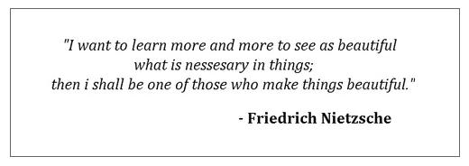

"I want to learn more and more to see as beautiful what is necessary in things; then I shall be one of those who makes things beautiful." - Friedrich Nietzsche
인간이 경험 세계에 사는 존재라면,
경험 세계가 불확실하고 믿을 수 없는 존재인 이상,
이성을 사용해 파악한 세계관 또한 절대적일 수 없지 않은가?
애초에 인간의 이성이 불완전한 것이라면,
인간의 이성보다 완전한 것을 인간의 주관적 합리성으로 파악할 수 있는가?
다시 말해, 불완전한 것으로부터 완전한 것이 나올 수 있는가?